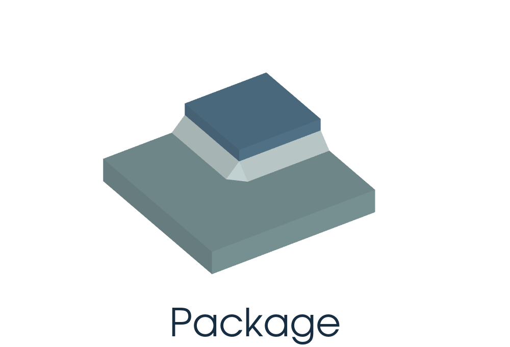
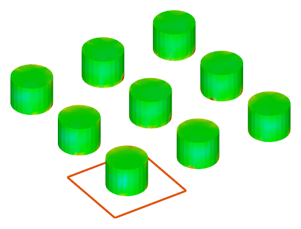
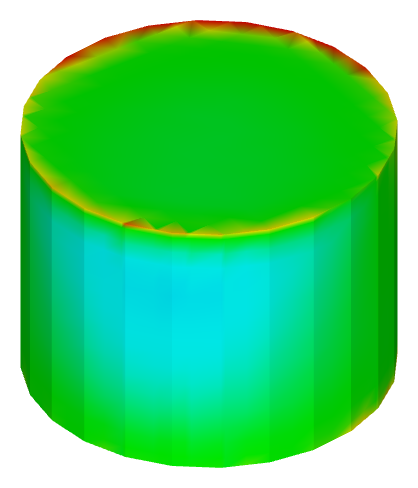
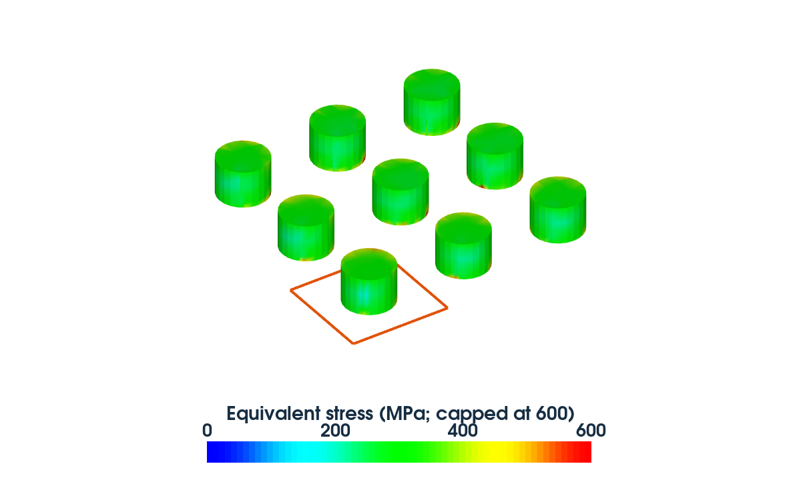
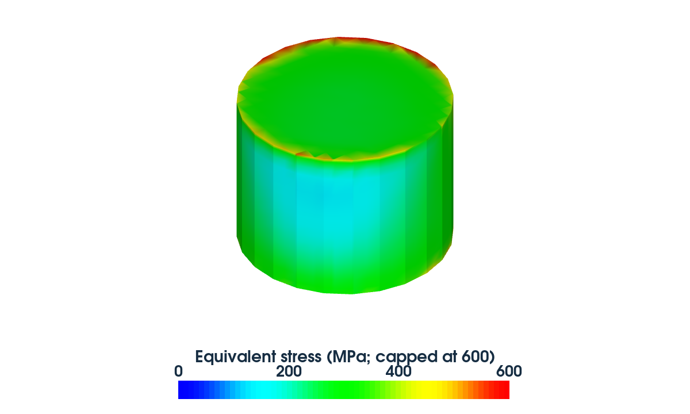

- Status
- Needs review
- Mode
mode mechanics- Device
- Flip-chip package with a 3 × 3 copper-pillar array and a single-pillar submodel.
- Case background
- Cooling from 180 °C to 25 °C. Global displacement is mapped to the refined single-pillar mesh to solve local stress.
- Configuration
- The workflow targets global displacement mapping onto a refined single-pillar mesh. It is an adaptation, not an independently invented case.
- Capabilities
- Global-to-local displacement mapping · local refinement · mechanical constraints
- Execution flow
- Global geometry / mesh → global.cmd → global displacement → unit-fine.cmd → local stress
- Execution notes
- The two solution CMD files have a data dependency. Frozen-mesh variants are global-freeze.cmd / unit-fine-freeze.cmd. Temperature is a prescribed cooling load, not a heat-conduction solution.
- Commands
benchmark-golden/pillar/inputs/global.cmdbenchmark-golden/pillar/inputs/unit-fine.cmd
Backend_Submodeling
Submodeling
Flip-chip package

Result data
Accuracy
| Metric | StressThermal | GT-S | GT-A |
|---|---|---|---|
| Global maximum equivalent stress (MPa) | 887.678 | 887.678 | 887.678 |
| Local maximum equivalent stress (MPa) | 703.701 | 703.701 | 703.700 |
Performance
| Stage · time (s) | StressThermal | GT-S | GT-A |
|---|---|---|---|
| Global solve | 16.69 | 16.45 | 38.60 |
| Local solve | 43.02 | 39.10 | 77.50 |
Global model: 246,681 tetrahedra · Local model: 422,904 tetrahedra
GT-A
Pending · Equivalence: Not validated
The equivalent GT-A script is pending.
Simulation contours




CMD inventory (20 physical entries, including historical copies)
original/flipchip-array-verification/vendor-original.cmdoriginal/submodel-candidates/PackageAssembly_Stress/GlobalFlow_sis.cmdoriginal/submodel-candidates/PackageAssembly_Stress/LocalFlow_sis.cmdoriginal/submodel-candidates/PackageAssembly_Stress/LocalProcess_sis.cmdoriginal/submodel-candidates/PackageAssembly_Stress/RegionalFlow_sis.cmdoriginal/submodel-candidates/PackageAssembly_Stress/sde_test.cmdbenchmark-golden/pillar/calibration-a/stressthermal/global.cmdbenchmark-golden/pillar/calibration-a/stressthermal/unit-fine.cmdbenchmark-golden/pillar/calibration-a/vendor/unit-fine.cmdbenchmark-golden/pillar/freeze/global-freeze.cmdbenchmark-golden/pillar/freeze/unit-fine-freeze.cmdbenchmark-golden/pillar/honesty-audit/assemble-sample-20261011/local-repair/global.cmdbenchmark-golden/pillar/inputs/global.cmdbenchmark-golden/pillar/inputs/unit-fine.cmdbenchmark-golden/pillar/mapdl/formal-pillar-mapdl-a-r1/local/local.cmdbenchmark-golden/pillar/mapdl/formal-pillar-mapdl-a-r2/local/local.cmdbenchmark-golden/pillar/mapdl/formal-pillar-mapdl-a-r3/local/local.cmdbenchmark-golden/pillar/mapdl/orientation-calibration-a/local/local.cmdbenchmark-golden/pillar/mapdl/orientation-calibration-a/local-b/local.cmdbenchmark-golden/pillar/point-spc-host/model.cmd